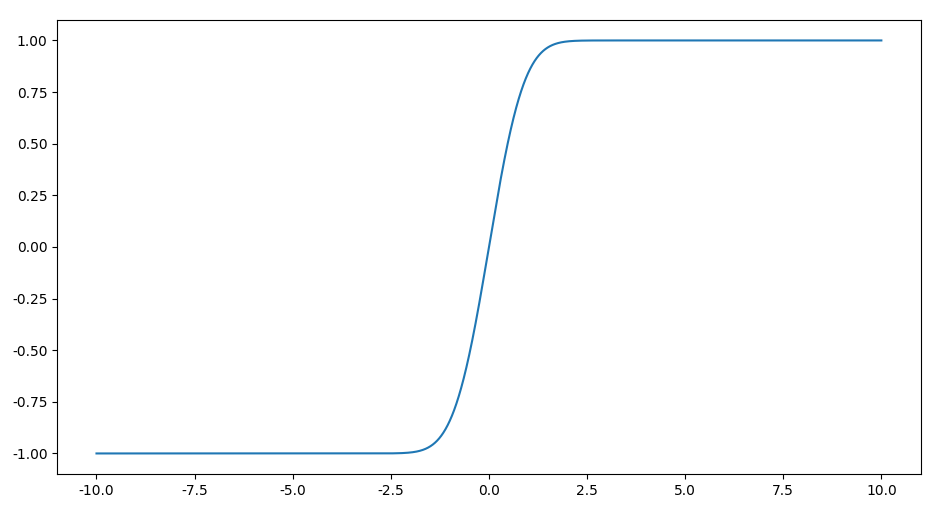

形形色色的Sigmoid（S型）函数
Sigmoid函数指S型的函数，盘点一下都有哪些？
Sigmoid函数指S型的函数，在一段区间内较快增长，该区间外区域饱和。
形形色色的Sigmoid函数
形形色色的Sigmoid函数，我们可以大致分为指数类型、代数类型以及基于误差函数逼近等思路。S性函数有一个特点就是，当$x$较小时，有
例如当$x$较小时，$\tanh(x) \approx x$。
指数形式
Logistic函数，
这种形式的函数事实上来自增长模型，微分方程表示为，
$P$为种群数量，$r$为增长率，$K$为环境容量，方程解得，
把参数简约掉，就得到Logistic函数。过去的文章也提供光滑近似的导出思路，见Sigmoid函数导出的另外一个角度。
Logit，顾名思义log it，对$\operatorname{odds}(p)$取对数变换，
这里$\text{odds}(p) = \frac{p}{1-p}$，于是$\operatorname{logits}(p) \in [-\infty, +\infty]$没有上下限，于是可以方便地进行建模。例如最简单的线性模型，
因此有，
这个函数其实很漂亮，其导数可以用自身来表示，
可以在里面添加一个参数控制增长的陡峭程度，
广义的Logistic函数，
$\tanh(x)$，
事实上，我们注意到，
同上，可以添加参数控制增长区间内的陡峭程度，
这些S型函数都是基于$f(x) = e^{x}$，因此具有很好的梯度特性。
代数函数
纯粹的代数函数也可以构造S型函数，如
特殊形式如取$k=2$，有，
其出发点其实是逼近$\displaystyle \operatorname {sign} (x) = \frac{x}{|x|}$这种形式。
从误差函数出发
误差函数，
是一个像logistics函数图像一样的函数，易证$\operatorname{erf}(\frac{x}{\sqrt{2}}) \in (-1, 1)$，函数图像如下，

该函数有一个有趣的性质，
误差函数的定义是积分形式，无法直接用初等函数直接计算。这里我们对其进行逼近。$\operatorname{erf}(\frac{x}{\sqrt{2}})$图像最容易让人联想到的函数是$\tanh(x)$，它们之间的区别就在陡峭程度上。容易推导GELU与正态分布的累积分布函数$\Phi_{\sigma}(x) $或误差函数$\operatorname{erf}(x)$的关系，
这里我们直接借鉴论文Gaussian Error Linear Units (GELUs)中的结论，注意到论文中有结论，
于是有，
这个近似形式上还是关于$e^x$，因此能否用$\sigma(\alpha x)$来逼近呢？答案是可以的，可参看以上论文。
逼近符号函数
不严格来说，符合函数也可以看做是S型函数，
由于$\displaystyle \operatorname {sign} (x) = \frac{x}{|x|}$，因此可以构造很多光滑版本，如，
其中$\varepsilon$是一个接近0的数。稍微推广一下，
其实就是上述$\displaystyle f(x)=\frac {x}{(1+|x|^{k})^{1/k}}$这种形式。此外还可以在$|x|$上修改，例如，
不过这种S型是不对称的，因为$e^x$的增长并不是平缓的。于是，可以改造为对称形式，
还有一种比较优雅的做法，注意到max函数可以表示为logsumexp形式，
于是有，
其中$\alpha$是一个较大的数。
逼近阶跃（Heaviside step）函数
类似地，还有阶跃（Heaviside step）函数，其实和符号函数很像，前者把$x \lt 0$部分向上平移一个单位，
其光滑形式就是参数化的Logistic函数$\displaystyle \sigma_k(x) = \frac{1}{1 + e^{-kx}}$。Heaviside step函数还有一种关于狄拉克函数（dirac function）的定义，
其中狄拉克函数为，
狄拉克函数满足，
狄拉克函数使用正态分布逼近，
因此其积分，即正态分布的累积分布函数可以作为$H(x)$的光滑近似。标准正态分布的累积分布函数可以用$\operatorname{erf}(x)$表示，
因此，对于一般正态分布函数，其累积分布函数为，
其中$\mu = 0$，$\sigma$控制S形状以不同程度逼近$\displaystyle H(x)$。
总结
本文总结了形形色色的S型函数，那么你心中完美的S型函数是谁呢？
转载请包括本文地址：https://allenwind.github.io/blog/13658
更多文章请参考：https://allenwind.github.io/blog/archives/